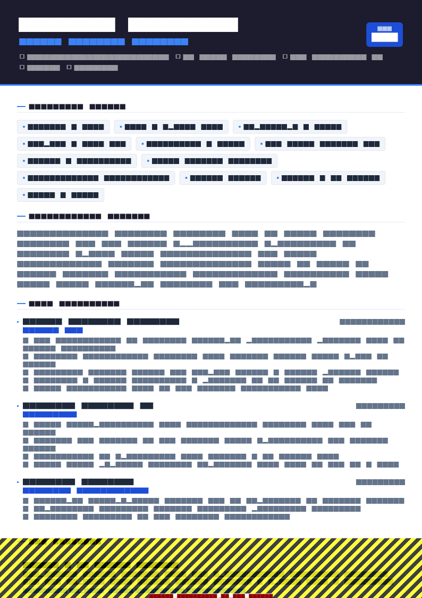

What "best" means here
An engineering resume has to survive three readers in a row, and they want completely different things.
The parser wants structure: recognisable headings, one column, dates it can subtract. The recruiter spends somewhere between ten and thirty seconds deciding whether your stack and seniority match the requisition — they are pattern-matching on technology names, company names, and years. The hiring manager or tech lead reads properly, and is asking one question: has this person solved problems at the scale and complexity we have?
Almost every piece of bad advice comes from optimising for one of these and ignoring the others. A gorgeous two-column design pleases nobody but you. A keyword-stuffed wall of technology names gets you a screen call and then a rejection. The resume that works is boring in structure and specific in content.
Single-column, reverse-chronological, one page under about eight years. Summary of three lines. A categorised technical skills block directly under it. Then experience, where every bullet names a system and ends in a measured result. Projects only if they show something your jobs do not.
Format, length and file
Reverse-chronological, always. Functional and skills-first formats are read as an attempt to hide something, and in engineering they usually are hiding something — a gap, a title downgrade, or a lack of production experience. If you have a genuine gap, label it and keep the chronology.
One page up to roughly eight years; two after that. The tradeoff is real. Below eight years, everything that matters fits, and a single page is read in full. Above it, squeezing architecture ownership, mentoring and cross-team work onto one page means deleting the exact evidence that supports a senior or staff title.
A text-based PDF, named for a human. Anita-Rao-Backend-Engineer.pdf. Not resume_final3.pdf. The full reasoning on file formats, parsing and the plain-text test is in the ATS resume tips guide.
The section order that works
Order is a ranking of your own evidence. Put the strongest thing a reader could learn about you closest to the top.
| # | 0–2 years / new graduate | 2–8 years | 8+ years / senior |
|---|---|---|---|
| 1 | Contact | Contact | Contact |
| 2 | Professional Summary | Professional Summary | Professional Summary |
| 3 | Technical Skills | Technical Skills | Technical Skills |
| 4 | Projects | Work Experience | Work Experience |
| 5 | Education | Projects (max 2) | Education |
| 6 | Work Experience / internships | Education | Open source, talks, patents |
| 7 | Certifications | Certifications | Certifications |
Two deliberate choices in that table. Skills sit high for everyone, because that is the recruiter's first pattern match and it costs four lines. And education drops below experience the moment you have real production experience — even a well-known degree stops being your headline after your second job.
Writing the summary: three lines, no adjectives
The summary is not an objective statement and it is not a personality description. It is a compressed answer to "what kind of engineer are you, at what level, in what domain, with what stack". Three lines, four at most.
Generic
Passionate and detail-oriented software engineer with a strong work ethic, seeking a challenging role at a forward-thinking company where I can grow and leverage my skills.
Specific
Backend engineer with 6 years building payment and ledger systems in Java and Kotlin on AWS. Owned services handling 2,000 requests per second at 99.98% availability. Led the migration of a monolithic settlement flow to 9 event-driven services.
Notice what the second version does: it states the discipline, the years, the domain, the stack, a scale number, and one piece of ownership evidence. A recruiter can screen it in five seconds and a tech lead already has two questions to ask you.
Tailor this block per application. It is four lines of editing and it is the highest-leverage change you can make for a specific role.
The technical skills block
Group by category, put the posting's own technologies first within each line, and use plain text rather than a table or a grid of logos.
- Languages: Java, Kotlin, Python, SQL, TypeScript
- Frameworks: Spring Boot, Hibernate, JUnit, Testcontainers
- Data: PostgreSQL, Redis, Kafka, Elasticsearch
- Cloud & infra: AWS (ECS, Lambda, RDS, SQS), Docker, Terraform, GitHub Actions
- Practices: Event-driven architecture, TDD, trunk-based development, observability (OpenTelemetry, Grafana)
Four rules for this block:
- Only list what you would be interviewed on. Every item is an invitation to a question. A language you touched once in a tutorial is a trap you set for yourself.
- No proficiency ratings. Star ratings, percentage bars and "advanced / intermediate" labels are unverifiable, they do not parse, and reviewers ignore them.
- Spell out ambiguous acronyms once.
CI/CD,IaC (infrastructure as code)— you do not know which form the recruiter searched. - Reorder per application. If the posting leads with Go and Kubernetes, those go first. Same facts, different sequence, materially better keyword match.
Bullets: action, system, result
The single most common flaw in engineering resumes is bullets that describe assigned work rather than delivered outcomes. The fix is a consistent three-part shape:
[Past-tense verb] + [the system, at what scale] + [the measured change]
Before
Worked on the API team, responsible for developing new REST endpoints and fixing bugs using Java and Spring Boot.
After
Built 14 REST endpoints for a Spring Boot order service handling 1.2M requests/day, and cut p95 response time from 640 ms to 180 ms by adding Redis read-through caching.
Before
Helped improve the CI pipeline and wrote unit tests to increase code coverage.
After
Reduced CI runtime from 22 to 6 minutes by parallelising the test suite and caching Gradle dependencies, unblocking roughly 30 merges per day for a team of 11.
Practical notes. Lead with verbs that mean something specific — built, migrated, instrumented, decomposed, profiled, automated, hardened, benchmarked — and retire helped, worked on, was responsible for, participated in, assisted with. Keep bullets to one or two lines. Three to five bullets for your current role, two or three for the previous one, one or two for anything older than five years.
Write the scale you were genuinely operating at, and describe your own contribution rather than the team's total. "Contributed the authentication module to a platform serving 4M users" is credible and checkable. "Architected a platform serving 4M users" when you shipped one module will not survive a reference call or a system design interview.


The engineering metric menu
"I do not have numbers" is almost always false. You do not own revenue, but you own a great deal of measurable reality. Pick from this list, then go find the actual figure in your dashboards, PR history or incident tracker before you write it down.
| Dimension | Metrics you can usually get |
|---|---|
| Performance | p50/p95/p99 latency, throughput (requests or messages per second), memory footprint, cold start time, bundle size, query execution time |
| Scale | Daily active users, requests per day, rows or events processed, dataset size, number of services, endpoints or tenants |
| Reliability | Availability percentage, error rate, incident count, mean time to recovery, on-call pages per week, SLO attainment |
| Velocity | CI duration, deploy frequency, lead time from merge to production, release cadence, time to spin up an environment |
| Quality | Coverage on code you touched, defect escape rate, production bugs per release, flaky test count eliminated |
| Cost | Monthly cloud spend reduced, instance count, storage or egress saved, licence consolidation |
| People | Engineers mentored, PRs reviewed per week, team size led, cross-team stakeholders coordinated, interviews conducted |
Two more patterns worth knowing. Before and after beats a single figure: "from 840 ms to 210 ms" is more informative than "improved by 75%". And a count with a constraint works when there is no delta to report: "shipped 9 services in 7 months with zero rollbacks".
Projects, GitHub and portfolio
Projects are compulsory for new graduates and optional for everyone else. The test for including one after two years of professional experience: does it demonstrate something my paid work does not? A project using the exact stack in the posting qualifies. A project at a scale or in a domain your job never touches qualifies. A to-do app does not.
Write projects like miniature jobs — problem, stack, outcome:
ledger-sim — Go, PostgreSQL, Docker · github.com/yourname/ledger-sim
- Double-entry ledger simulator that replays 5M synthetic transactions and reconciles balances in under 40 seconds.
- Added a deterministic fault-injection mode to test partial-failure recovery; documented three consistency bugs it surfaced.
On links: include a GitHub URL only if the profile stands up to a click. A pinned repository with a genuine README, comprehensible commit history and something actually finished helps. An empty profile with three forks actively hurts, because a reviewer who was interested now knows more than they did. If your best work sits in private repositories, say exactly that and describe the work.
Write URLs as visible plain text — github.com/yourname — rather than hyperlinking the words "my GitHub". Extraction keeps what is visible.
Tailoring by discipline
Same structure, different emphasis. What you foreground should change with the role you are targeting.
| Role | Lead with | Example bullet shape |
|---|---|---|
| Backend | Throughput, data modelling, API design, reliability | Decomposed a 240k-line monolith into 6 bounded services, holding p99 under 300 ms through the cutover. |
| Frontend | Core Web Vitals, accessibility, bundle size, design-system work | Cut Largest Contentful Paint from 4.1 s to 1.6 s by code-splitting routes and deferring third-party scripts. |
| Mobile | Store metrics, crash-free rate, app size, release cadence | Raised crash-free sessions from 97.2% to 99.6% across 400k monthly users by fixing lifecycle leaks in 3 legacy screens. |
| Data / analytics engineering | Pipeline volume, freshness, model quality, cost per query | Rebuilt a nightly batch as an incremental dbt model, cutting warehouse spend 38% and data lag from 9 hours to 20 minutes. |
| Machine learning | Offline and online metrics, dataset size, serving latency | Shipped a ranking model that lifted click-through 11% in an A/B test against a 2M-user control, served at 45 ms p95. |
| DevOps / SRE / platform | Availability, MTTR, deploy frequency, toil removed, spend | Introduced Terraform modules and GitHub Actions pipelines for 40 services, taking environment provisioning from 2 days to 25 minutes. |
| QA / automation | Coverage, escaped defects, suite runtime, flake rate | Replaced a 3-hour manual regression pass with 320 Playwright specs running in 11 minutes, catching 14 release-blocking defects in the first quarter. |
| Embedded | Memory and power budgets, timing, hardware, certification | Cut firmware footprint 22% on a 256 KB Cortex-M4 target, keeping the control loop within a 5 ms deadline. |
New graduates and career switchers
If you are a new graduate
Lead with skills, then projects, then education, then internships and part-time work. Your coursework is not evidence; what you built is. Two or three substantial projects with real outcomes beat a list of eight assignments, and a capstone that shipped to actual users outranks anything with a grade attached.
Include your degree, institution and graduation year, plus relevant coursework only when it maps to the posting (distributed systems, compilers, machine learning). Skip the GPA unless it is strong and the employer asks for it — some graduate programmes and campus processes do.
Internships count as work experience. Write them with the same bullet structure, and resist the urge to describe what the team did instead of what you shipped. If you have a campus placement deadline, the Campus Placement layout at ATS 94 and Graduate ATS at 92 are built for exactly this stage.
If you are switching into engineering
Keep reverse-chronological, but make the summary do the reframing work: state what you are now, then what you bring from before. A QA analyst moving to backend should foreground the automation code they wrote, not the test plans they signed off.
Your projects section carries more weight than a bootcamp certificate. One deployed, maintained project with users and an honest write-up of what broke is worth more than three course completions. And keep the prior domain visible — an engineer who understands claims processing or clinical workflow is genuinely more valuable to a company in that domain than a generalist.
ATS traps specific to engineering resumes
- The skills table. Engineers love a grid. Grids extract as jumbled fragments. Use labelled plain-text lines instead.
- Technology logo walls. A row of framework logos contains zero extractable text. The parser sees an empty section where your entire stack should be.
- Punctuation-heavy stack names. Write both forms where they differ in the wild:
Node.js (NodeJS),C#,.NET,CI/CD. Searches are inconsistent about separators. - Version numbers as the only mention. "React 18" matches a search for "React"; "React18" may not. Keep the space.
- Sidebar layouts. The single biggest parsing risk, and the most common in engineering templates. One column for anything you upload.
- Clever headings. "Stack" and "Toolbox" are not recognised section names. Use "Technical Skills".
- Contact details in the page header. Some parsers skip the header region entirely. Keep contact information in the document body.

Software Engineer ATS resume template
Software Engineer ATS is built around a categorised skills matrix and a project showcase, so a long stack stays scannable without pushing your experience onto a second page. ATS 96, free.
Use this template in NextCVTemplates to use
Structure carries most of the ATS risk, so template choice is a real decision rather than a cosmetic one. From the NextCV template library:
| Template | ATS score | Best for |
|---|---|---|
| Software Engineer ATS | 96 · Free | The default choice — categorised skills matrix plus a project showcase, built for technical stacks |
| ATS Pro | 98 · Free | The highest-parsing layout in the library; use when the posting or portal looks strict |
| Technical Professional | 92 | Longer histories where experience needs more room than skills |
| Pure White | 95 · Free | Minimal, typography-led; senior engineers who want restraint |
| Campus Placement | 94 · Free | Final-year students and campus recruitment drives |
Portfolio and design-led layouts sit at the bottom of the ATS range for structural reasons. If you want one, use it as a second file for your own site or for direct emails to a hiring manager — not for portal uploads.
Checklist before you send
- Single column, text-based PDF, named
Firstname-Lastname-Role.pdf - Summary states discipline, years, domain, stack and one scale number
- Technical skills grouped by category, with the posting's technologies first
- Every skill listed is one you would accept an interview question on
- Each recent role has three to five bullets, each ending in a measured result
- At least four different metric types used across the resume
- No skill bars, logo walls, tables or sidebars
- Job titles are the industry-standard equivalents, internal titles in brackets
- Projects earn their space, and any GitHub link survives a click
- Plain-text paste test passed — headings, employers and dates still line up
Frequently asked questions
Should a software engineer resume be one page or two?
One page up to roughly eight years of experience, two pages beyond that. Engineering hiring managers skim for stack match and scale first, and a single dense page reads faster than two sparse ones.
Past eight years, forcing everything onto one page means cutting the architecture and leadership work that justifies a senior title, which costs you more than the extra page does.
Do I need a projects section if I already have work experience?
Only if a project shows something your job does not. A side project that uses the exact stack in the posting, or that demonstrates a scale or domain your day job never touches, earns its space.
Three half-finished tutorials do not — with two or more years of professional experience, they dilute the page. Keep at most two projects, each with an outcome, not just a repository link.
How do I quantify my work if I do not own a business metric?
Use engineering metrics, which you do own: p95 latency, throughput, error rate, build and CI duration, deploy frequency, incident count and mean time to recovery, test coverage on the code you touched, number of services or endpoints, data volume processed, cloud spend, and team or reviewer counts.
A bullet reading "cut p95 checkout latency from 840 ms to 210 ms by replacing N+1 queries with a batched loader" is stronger than any revenue claim you cannot substantiate.
Should I list every programming language I have used?
No. List what you would be comfortable being interviewed on, grouped by category, with the technologies named in the job posting first.
A twenty-item language list signals inexperience rather than range, and it invites a question about the one item you last touched five years ago. Anything you used once for a tutorial belongs nowhere on the resume.
Is a GitHub link worth including?
Include it only if the profile is presentable: a pinned repository with a real README, readable commits, and something finished. An empty or abandoned profile is worse than no link, because an interested reviewer clicks it and finds nothing.
If your best work is in private repositories, say so in a project bullet and describe the work instead of linking.
Which resume template works best for software engineers?
A single-column, parser-first layout with a dedicated technical skills block. In NextCV, Software Engineer ATS scores 96 out of 100 and is built around a categorised skills matrix and a project showcase; ATS Pro at 98 is the safest general-purpose option, and Technical Professional at 92 suits longer career histories.
Avoid two-column and portfolio-style layouts for anything you upload to an application portal.
NextCV Editorial
NextCV is an AI resume builder by Empire Softtech. We publish the same guidance our in-app ATS analyser is built on — seven weighted sections, 29 templates scored from 72 to 98, and no formatting advice we would not follow ourselves.